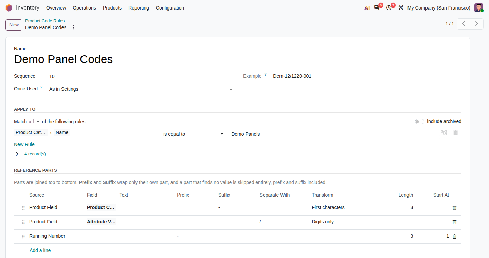
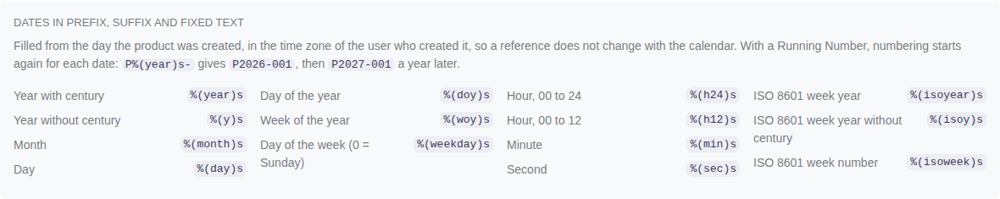
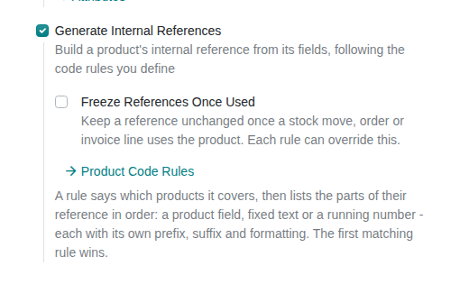
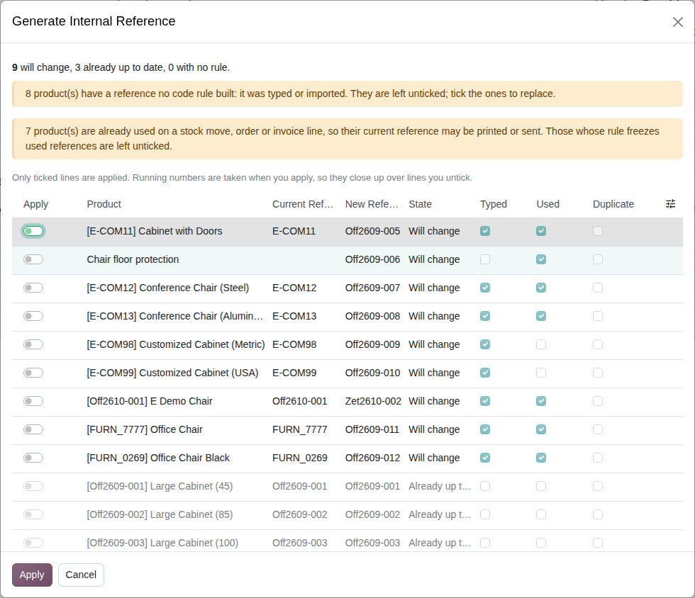
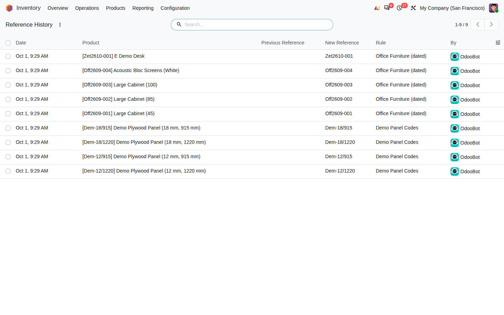

ODOO 20 · INVENTORY
Build each variant's internal reference from the fields it already has.
A code rule says which products it covers, then lists the parts of their reference in order: a product field, fixed text or a running number, each with its own prefix, suffix and formatting.
References follow the product: category, attribute values, its creation date or any field reachable from the variant.
A Running Number keeps equal references apart, and a Duplicate References filter finds the ones that already clash.
Bulk generation shows a preview first. Typed references and references already printed or sent are left alone unless you tick them, and every change is recorded.
Open Inventory › Configuration › Products › Product Code Rules. Apply To selects the products; Reference Parts are joined top to bottom. Example shows what the rule builds for the first product it matches.

Here the category is cut to three letters, the attribute values keep only their digits, and a three-digit running number follows: Dem-12/1220-001.
| Source | What it adds |
|---|---|
| Product Field | Any field of the variant, following relations. A path through a list, such as attribute values, adds every value it finds, joined by Separate With. |
| Fixed Text | Used as typed: a company initial, a separator. It may hold date placeholders, such as %(year)s. |
| Running Number | Counts per reference: products whose other parts come out the same are numbered one after another, padded to Length, from Start At. One per rule. |
Each part can be transformed - UPPERCASE, lowercase, digits only, first characters, pad with zeros - and a part that finds no value is skipped with its prefix and suffix. A running number next to a part that can end in a digit needs a Prefix such as -, so DEM-18 and DEM-180 never share a sequence.
A field path is checked when the rule is saved. If a field disappears later, for example because its module is uninstalled, products under that rule keep their reference. They do not get a shorter one. The rule's Example shows which field it cannot read.
Prefix, Suffix and Fixed Text accept the placeholders of Odoo's sequences, such as %(year)s, %(y)s, %(month)s and %(isoweek)s. The rule form lists them all.

%(y)s%(month)s and -001, gives Off2609-001, Off2609-002, then Off2610-001 the next month.%(yeer)s, is refused when the rule is saved. A lone %, as in 50%, stays as typed.In Inventory › Configuration › Settings › Products, tick Generate Internal References. New variants then get their reference on creation. After that, the reference follows the fields a rule reads, whether they are edited on the product form or on a single variant. A reference typed by hand is never overwritten automatically. A blank reference is filled the next time one of those fields changes, which covers products created before their rule existed.

Freeze References Once Used stops automatic rebuilding once a stock move, order or invoice line uses the product. Each rule can override it with Once Used.
Select products in the product list or kanban and choose Actions › Generate Internal Reference. All their variants appear in one preview. The action also runs from a product's form, from its Variants list and from a single variant's form. The preview lists each product's current and new reference, and applies only the lines left ticked. It flags:
A typed reference is replaced only if you tick its line.

Running numbers are taken when you apply, so they close up over the lines you untick.
Inventory › Configuration › Products › Reference History lists every reference a code rule wrote. It shows the reference it replaced, the rule, the user and the date, so a reference printed on an old label can still be traced to the new one. This history is also how the preview tells a typed reference from a generated one.

On upgrade from 20.0.1.0.0, references that still match their rule are recorded as generated. Generated references whose fields have changed since cannot be told from typed ones, so the preview shows them as Typed.
Screenshots show demo data in Odoo 20 test databases.